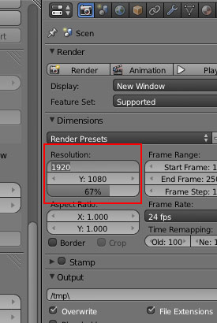

Soyez les bienvenus dans ce tutoriel ayant pour but de vous initier au Camera Mapping, technique qui permet de manière relativement aisée et rapide d'obtenir des rendus fidèles à la réalité.
Concrètement, nous allons voir comment nous pouvons, à partir de l'image suivante...
... parvenir à ce rendu. :-°
Mais, c'est quoi en fait le camera mapping ? :o
Le principe du camera mapping (en bref) est de projeter — via la vue de la caméra — une image sur un plan (dans Blender, c'est l'option Project From View). Dans le cas présent, nous allons donc modéliser notre coupe et un volume pour son contenu qui sera simplement texturé en projetant la photo.
Mais, c'est de la triche ! On ne modélise presque rien en fait ?!
Courage ! Une fois que cette étape sera passée, ça ira tout seul.
Où est la difficulté ?
En fait, pour que le camera mapping fonctionne correctement, il va falloir trouver le même angle de vue que dans la photo de base... que vous allez déjà enregistrer sur votre disque dur.
Clic droit puis 'enregistrer sous'
Les informations nécessaires à la réalisation de cette tâche sont les suivantes :
dimensions de l'image : 480 x 640 ;
focale : 35 mm (information que vous pouvez avoir dans l'onglet EXIF de l'image en la visionnant avec Xnview).
Attention : si vous prenez une image sur le net, il y a des chances que l'info sur la focale ne soit pas disponible. Mieux vaut prendre des photos vous-même, avec la meilleure définition possible et en évitant les sources de lumière directes ou trop franches.
Lancez Blender, puis, en vue caméra (Numpad 0), placez la photo en arrière-plan (N, puis cochez Background Image).
Donnez à la caméra la même dimension que l'image dans le panneau Render (ici X : 460 et Y : 640).

Il faudrait également indiquer la bonne focale, mais par défaut elle est déjà sur 35 (vérifiez quand même en sélectionnant la caméra).
Le plus dur, c'est maintenant : il va falloir placer la caméra sous le bon angle. Et il n'y a pas vraiment de méthode... si ce n'est être patient.
Supprimez le cube de base si ce n'est pas déjà fait et, en vue de dessus (Numpad 7), ajoutez un cercle de 8 vertices (Shift + A > Mesh > Circle puis entrez la valeur '8' dans le champ Vertices, dans le panneau de gauche, T si vous n'avez pas ce panneau)...
... auquel vous mettez le modificateur Subsurf au niveau 2.
Si vous êtes en Object Mode, vous devez avoir un bel arrondi que nous allons essayer de faire correspondre avec le bord supérieur de la coupe. Sélectionnez la caméra et basculez en vue caméra (Numpad 0) et commencez à baisser la caméra (G>Z) histoire d'avoir le cercle et le bord à peu près à la même hauteur. Vous vous rendrez compte qu'il faut agrandir le cercle afin qu'il ait le même diamètre que sur la photo. Pour ce faire, sélectionnez le cercle et pressez la touche S et ajustez la taille.
Patience, patience... Vous DEVEZ enfin arriver à ça !
Pour vérifier que tout est bon, vous pouvez sélectionner le cercle, passer en Edit Mode (Tab) et extruder les vertices vers le bas (E>Z) et les scaler (S) afin de voir si l'arrondi correspond aussi au pied de la coupe.
En Edit Mode
En Object Mode, vue Wireframe.
C'est bon ? Ça marche ? :o Cool ! ^^ Sauvegardez !!! Ce serait dommage de tout avoir à recommencer...
Pour modéliser ce genre d'objet, beaucoup de gens diraient « Il faut utiliser le Spin ». Or, le Spin génère des triangles qui, avec le subsurf, ne rendent pas bien. >_ Nous allons donc utiliser une méthode simple composée uniquement d'extrusions et de scales successifs, à partir d'un cercle composé de 4 quadrangles.
En Edit Mode, supprimez l'extrusion de vérification faite juste avant et ne gardez qu'un cercle. Déplacez-le jusqu'à la base de la coupe (G>Z) et redimensionnez-le (S) afin de faire correspondre le diamètre. En vue de dessus (Numpad 7), sélectionnez deux points opposés du cercle et ajoutez un edge entre eux avec F. Ensuite, faites W et choisissez Subdivide pour ajouter un vertice au milieu de ce nouvel edge.
Sélectionnez les vertices par 4, et créez les faces avec F. Voilà un beau disque, léger en vertices, prêt à être extrudé.
Repassez en vue caméra, sélectionnez toutes les faces (A) et commencez à extruder le disque vers le haut. Ajustez chaque extrusion au diamètre qui convient avec la touche S. Attention : avec le Subsurf, il ne faut pas hésiter à faire des extrusions assez proches pour que les angles soient plus marqués.
Vous devez obtenir cette forme générale.
Vue en Solid :
Un aperçu du maillage en vue de côté.
Pour creuser l'intérieur, faites une grande extrusion.
Placez un Loop Cut (Ctrl+R) à l'intérieur de la coupe au niveau de la surface du dessert (partie crumble).
Voilà pour la coupe. Passons au contenu ! Ah ! Et n'oubliez pas de sauvegarder. ;)
Le contenu
Vu que c'est un volume qui a la forme de la coupe (logique...), on ne va pas se gêner : on va prendre sa forme directement sur la coupe.
Sélectionnez les faces intérieures de la coupe situées en-dessous du dernier Loop Cut que vous avez fait.
Puis, dupliquez ces faces avec Shift+D et faites tout de suite clic droit pour annuler tout déplacement. Séparez les nouvelles faces dupliquées avec P > Selected.
Passez en Object Mode et sélectionnez le nouvel objet ainsi créé. Pour plus d'aisance, vous pouvez le mettre sur un autre calque (M).
Normalement, votre objet a cette forme.
Il va falloir le refermer. Pour cela, sélectionnez les vertices du haut, faites une extrusion (E) puis cliquez droit pour annuler tout déplacement et scaler légèrement vers l'intérieur.
Faites une autre extrusion vers l'intérieur avec la même méthode.
Pour fermer, on va simplement créer des faces en utilisant la même technique que pour créer le disque de base de la coupe.
Voilà ! Une dernière précaution consiste à rediriger les normales des objets vers l'extérieur. En Edit Mode, sélectionnez tout avec A et faites Ctrl+N. C'est tout. ^^
À ce stade là, nous avons tous les ingrédients pour faire un délicieux crumble. On y va ! :pirate:
Simplissime : nous allons faire de l'UV-Mappingl'UV-Mapping de bourrin. :p
Ah ! Mais moi j'ai fait le tuto de FélixEnFeu et j'ai pas trouvé ça si simple ! :o
Effectivement, selon les méthodes de dépliage, l'UV Mapping peut être plus ou moins complexe. Dans notre cas, il va simplement s'agir de projeter la photo sur l'objet à l'intérieur de la coupe.
Nous allons utiliser cette texture (qui est la photo légèrement retouchée afin de masquer le rebord).
Clic droit puis 'enregistrer sous'
Sélectionnez l'objet du contenu de la coupe et assignez-lui un nouveau matériau :
Dans le panneau des textures, sélectionnez Image or Movie dans le champ Type et chargez l'image ci-dessus et Mapping, mettez UV pour Coordinates.
Dans une fenêtre UV/Image Editor, chargez également cette image.
Nous pouvons passer au dépliage UV.
Le dépliage est très simple à réaliser : en mode Edit, dans la vue de la caméra (Numpad 0), sélectionnez tous les vertices de l'objet à déplier, puis appuyez sur la touche U et sélectionnez Project From View.
Maintenant, il ne s'agit plus que de bien positionner la texture dans la fenêtre UV/Image Editor avec les touches G et S. Aucune autre opération n'est nécessaire.
En Textured View, vous pouvez vérifier que la texture est bien en place.
Et voilà ! :magicien:
Quoi ? C'est tout ?! o_O
Ben, oui. ^^ Bon, vous voulez encore un peu de texturing ? On va s'en faire un sympa pour donner le relief à la couche de crumble.
Nous utiliserons cette texture sur un nouvel objet, qui sera en fait une simple copie de la couche supérieure du contenu.
Cette texture a été créée à partir de celle en couleur et a gardé les mêmes dimensions. Clic droit puis 'enregistrer sous'
En Edit Mode, sélectionnez les vertices de la partie supérieure du contenu.
Dupliquez-les (Shift+D puis clic droit pour annuler tout déplacement) et séparez-les (P > Selected). Passez en Object Mode et sélectionnez le nouvel objet ainsi créé. Ce doit être un disque si vous avez bien suivi (vous pouvez aussi le mettre dans un nouveau calque, avec M).
Dans le panneau Textutes, ajoutez une nouvelle texture (vous pouvez l'appeler "disp") et veillez à la désactiver en décochant le carré derrière son nom. Mettez UV dans l'onglet Mapping, dans Coordinates, et pensez à charger l'image servant au displacement.
Dans le panneau Object Modifiers, nous allons maintenant régler le subsurf pour subdiviser l'objet, puis appliquer le displacement.
Ajouter un nouveau 'modifier' en choisissant Displace dans le menu déroulant. Dans le champ Texture, tapez le nom de la texture de displacement (c'est donc "disp" chez moi) et choisissez UV pour Texture Coordinates.
Veillez à bien régler le Strength à -0.03... sinon ça déforme un max !
en laissant le strength à 1
Si vous lancez un rendu (F12), vous pouvez voir que c'est pas mal mais pas encore assez détaillé. On va donc encore répéter une subdivision avec le subsurf et refaire le même displace. Vous devez obtenir ceci.
Ah, vous n'avez pas lu cette partie du tuto de Riton ? Bonne lecture et revenez instruits ! C'est vrai, quand il y a un super tuto, je ne vais pas le recopier ! :-°
Ça y est ? Vous avez votre ciel ? Pour ceux qui utilisent l'interne l'AO est activée ? Bon. Allez, on continue.
En fait, j'ai simplement changé la lampe de base en spot.
Le décor
Juste un plane ici... mais votre créativité fera bien plus si vous le désirez. :ange:
Le rendu
Pour Yafaray, je vous propose les réglages suivants.
Les panneaux World et Render pour Yafaray.
Avec l'Internal de Blender, les réglages par défaut devraient suffire.
Il ne reste plus qu'à lancer le rendu (F12).
Et si tout va bien, vous devez avoir l'eau à la bouche. :p
Avec Yafaray
Avec l'internal de Blender
Le camera mapping est une technique de bluff assez répandue dans la 3D et qui permet des résultats convaincants assez facilement. ^^
Le tutoriel que vous venez de suivre est assez modeste mais rien ne vous empêche de prendre de belles photos plus complexes et de leur donner du relief ou d'ajouter des objets. Je vous recommande la lecture du tutoriel de Tase sur le site de Yafaray qui a élaboré des projets plus ambitieux : Pirates :pirate:
J'en profite pour le remercier d'avoir partagé ses connaissances. :ange: Sans oublier PtiLuky qui a assuré un travail monstrueux pour remettre à jour ce tutoriel sur notre logiciel préféré. :soleil:
{kind=link}